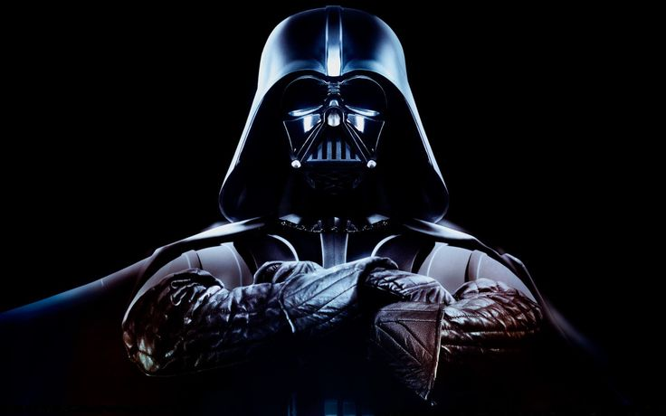

Para Início de Conversa. O que é um Vilão?
Um vilão é um personagem ou indivíduo que desempenha o papel de antagonista em uma história, geralmente em oposição ao protagonista (o herói). Ele é frequentemente caracterizado por ações ou intenções moralmente questionáveis, que podem incluir manipulação, violência, traição ou atos que causam sofrimento a outros. Na narrativa, o vilão serve como um catalisador para o conflito, desafiando o herói e criando tensões que impulsionam a trama. Aqui vão algumas das principais características de um vilão:
- Motivações pessoais ou ideológicas
- Contraste moral com o herói
- Habilidades ou recursos excepcionais
- Complexidade psicológica
Vilões frequentemente possuem motivações claras que justificam, para eles, suas ações. Isso pode incluir vingança, ambição, desejo de poder ou simplesmente prazer em causar o caos.
O vilão pode representar valores ou escolhas opostas às do protagonista, criando um contraste moral ou ético.
Muitos vilões têm habilidades, poderes ou recursos que os tornam formidáveis oponentes.
Alguns vilões são profundos e multifacetados, com dilemas internos que os tornam mais humanos e compreensíveis.
Veja agora alguns tipos de vilões que existem
- O vilão que acredita ser o herói da história
- Magneto
- Ozymandias
- Ra’s al Ghul
- O Vilão Clássico
- Sauron
- Rainha Má
- Capitão Gancho
- O Vilão Cômico
- Gru
- Hades
- Equipe Rocket
- O Vilão Trágico 
- Darth Vader
- Dr Victor Fries/Mr Freeze
- Gollum
Um vilão que acredita ser o herói da história é um tipo de antagonista complexo e multifacetado, que age com convicção de que suas ações são moralmente justificadas ou necessárias para alcançar um bem maior. Esse tipo de vilão vê a si mesmo como o verdadeiro protagonista e muitas vezes acredita estar corrigindo injustiças, promovendo mudanças necessárias ou protegendo o mundo de uma ameaça que apenas ele compreende.
Esse vilão geralmente possui uma visão do que considera ser o "bem maior". Ele pode estar disposto a sacrificar outros (ou até a si mesmo) para alcançar esse objetivo, acreditando que o fim justifica os meios.
Embora suas intenções possam parecer nobres, seu modo de pensar é frequentemente limitado ou radical, levando-o a ignorar as consequências negativas de suas ações. Ele acredita estar certo, mesmo quando os resultados são catastróficos para outros.
Em sua mente, ele não está cometendo crimes ou atos malignos, mas sim enfrentando um sistema corrupto, corrigindo injustiças ou salvando o mundo. Essa justificativa moral reforça seu senso de heroísmo.
Esse vilão muitas vezes entra em conflito com o protagonista, não porque odeia o herói, mas porque acredita que o herói está mal orientado, é ingênuo ou representa um obstáculo à sua "missão".
Um vilão que se vê como herói tende a ser mais humano e compreensível, permitindo que o público veja o mundo através de seus olhos. Isso pode criar dilemas morais e narrativos complexos. Aqui vão alguns exêmplos de vilões que acreditam que são heróis:
Magneto luta pelos direitos dos mutantes e acredita que sua opressão só pode ser resolvida por meio de um confronto direto com os humanos. Ele vê suas ações como uma luta legítima pela sobrevivência e liberdade de seu povo.
Ozymandias planeja matar milhões de pessoas para unir a humanidade contra uma ameaça maior, acreditando que suas ações preventivas trarão paz global. Ele vê a si mesmo como o único disposto a fazer o que é necessário.
O líder da Liga dos Assassinos acredita que está purificando a humanidade ao eliminar civilizações corruptas e decadentes, reconstruindo o mundo para um futuro mais justo.
Um vilão clássico é um tipo de antagonista que encarna o papel tradicional do "mal" em uma história. Ele é frequentemente caracterizado por suas intenções malévolas, falta de complexidade moral e ações que desafiam diretamente o herói ou protagonista. Esse arquétipo é comum em narrativas mais antigas ou simplistas, onde o conflito central é claramente definido como uma luta entre o bem (protagonista) e o mal (vilão).
O vilão clássico muitas vezes age de forma egoísta, cruel ou destrutiva, seja por desejo de poder, vingança, ambição desmedida ou prazer em causar sofrimento.
Ele é geralmente apresentado como totalmente mal, sem questionamentos ou nuances que justifiquem suas ações. Sua oposição ao herói é clara e direta.
O vilão clássico pode ser caracterizado por uma aparência que sugere sua maldade (roupas sombrias, cicatrizes, risada maléfica) e comportamentos exagerados que destacam seu papel antagônico.
Ele frequentemente busca derrotar ou destruir o herói, seja por inveja, ódio ou para alcançar um objetivo pessoal.
Suas razões para agir podem ser reduzidas a algo básico, como ganância, vingança ou puro desejo de dominação, sem uma explicação mais profunda ou psicologicamente complexa. Aqui vão alguns tipos de vilões clássicos:
Representa o mal absoluto, buscando subjugar toda a Terra Média sem qualquer nuance moral ou desenvolvimento emocional.
Obcecada pela beleza e movida pela inveja, suas ações são guiadas pelo desejo de eliminar sua rival, sem motivações mais profundas.
Um vilão extravagante e caricatural, cuja principal motivação é derrotar Peter Pan por vingança e orgulho ferido.
Um vilão cômico é um tipo de antagonista cuja principal característica é combinar elementos de humor com suas ações ou personalidade, geralmente trazendo leveza e alívio cômico à narrativa. Apesar de ainda ser uma força opositora ao protagonista, o vilão cômico não é tomado completamente a sério, seja por sua incompetência, exageros ou comportamento ridículo.
Vilões cômicos frequentemente têm manias, gestos ou estilos de fala exagerados que os tornam engraçados ou caricatos, mesmo em situações de conflito.
Suas ações vilanescas muitas vezes fracassam de maneira absurda, devido à própria falta de habilidade, inteligência ou sorte.
Embora o vilão cômico possa representar algum nível de perigo, suas falhas e excentricidades geralmente reduzem sua seriedade, tornando-o mais divertido do que ameaçador.
Eles podem ter razões triviais ou hilárias para seus atos vilanescos, como vinganças infantis, planos de dominação ridiculamente exagerados ou obsessões pessoais estranhas.
O vilão cômico geralmente se destaca por uma aparência chamativa, trejeitos engraçados ou frases de efeito, ajudando a reforçar sua presença humorística. Aqui estão alguns exêmplos de vilões cômicos:
Inicialmente apresentado como um vilão, Gru tem planos exagerados e cômicos, como roubar a Lua, mas é constantemente atrapalhado por sua interação com as crianças e os Minions.
Sarcástico e cheio de humor, Hades mistura ameaças com comentários engraçados e reações exageradas.
Jesse, James e Meowth são vilões que falham consistentemente em capturar Pikachu, mas suas frases de efeito e esquemas absurdos os tornam mais engraçados do que perigosos.
Um vilão trágico é um tipo de antagonista cuja história e motivações estão profundamente enraizadas em tragédias pessoais, dilemas morais ou eventos que deformaram sua visão de mundo. Ele não é simplesmente mal por natureza, mas alguém que se tornou vilão devido às circunstâncias, escolhas erradas ou falhas humanas. Isso cria um personagem complexo, com quem o público pode simpatizar, mesmo quando ele age contra o herói ou os valores da história.
O vilão trágico frequentemente tem uma história de sofrimento, como perda, rejeição, abuso ou eventos traumáticos que moldaram suas ações.
Suas ações, embora condenáveis, são fundamentadas em objetivos ou emoções legítimas, como amor, vingança, justiça ou desespero.
Esse vilão exibe traços humanos, como empatia, dor ou arrependimento, que o tornam mais realista e emocionalmente impactante.
Ele pode enfrentar escolhas difíceis que o colocam em uma posição de "não haver saída certa", reforçando a ideia de que suas ações são resultado de circunstâncias e não de pura maldade.
Muitas vezes, o vilão trágico sofre devido a uma falha de caráter (hamartia), como orgulho, obsessão ou ciúmes, que contribui para sua queda.
O vilão trágico frequentemente sente que foi empurrado para sua posição ou acredita que não tinha outra escolha, criando uma aura de fatalismo em sua trajetória.
Originalmente Anakin Skywalker, Vader é um herói que sucumbe ao medo e à dor, acreditando que suas escolhas sombrias são necessárias para proteger quem ama. Ele é um exemplo clássico de um vilão trágico que busca redenção.
Motivado pelo amor por sua esposa, Nora, Freeze se torna um vilão enquanto tenta salvar a vida dela. Suas intenções são nobres, mas seus métodos são moralmente questionáveis.
Transformado pelo poder corruptor do Um Anel, Gollum é um personagem dividido entre sua humanidade perdida e a obsessão que o consome.